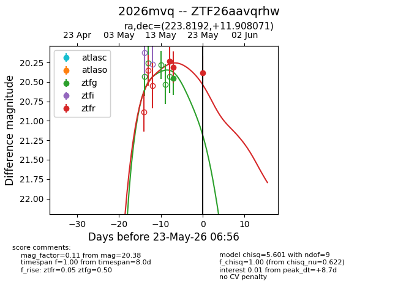
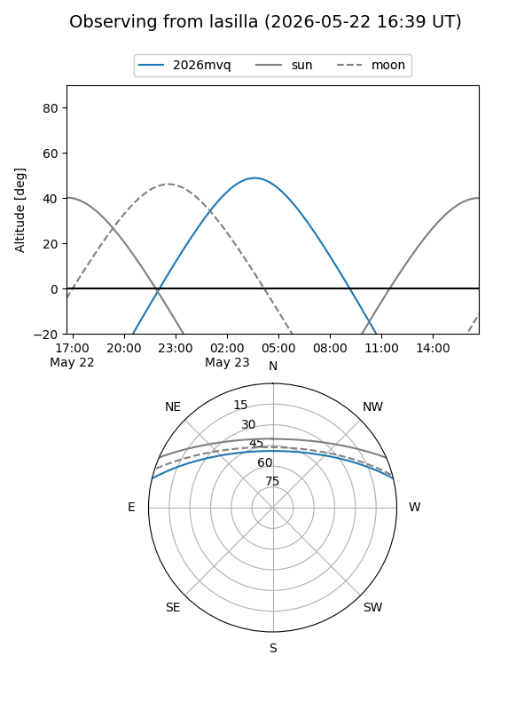
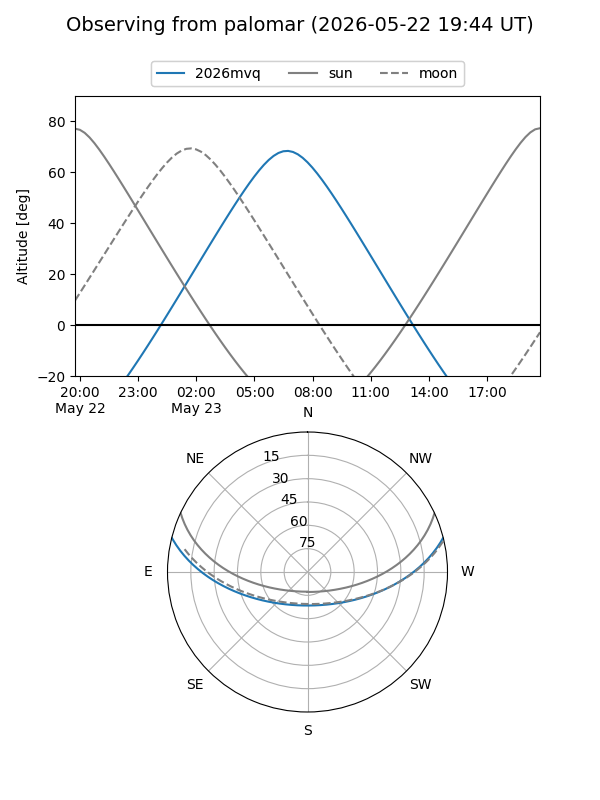
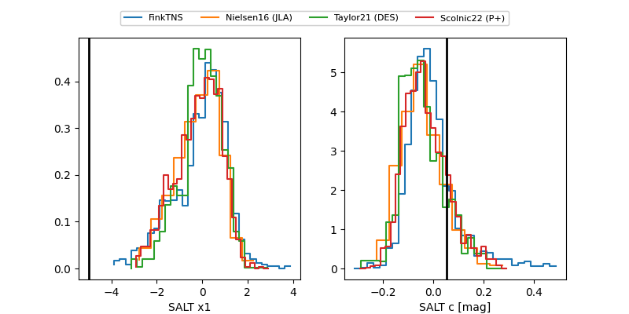

2026mvq
Target 2026mvq at 2026-05-23 06:57
Aliases and brokers:
lsst-FINK: link
lsst-Lasair: link
lsst-ALeRCE: link
ztf-FINK: link
ztf-Lasair: link
ztf-ALeRCE: link
TNS: link
YSE: link
alt names
ZTF26aavqrhw (ztf,fink_ztf)
2026mvq (tns,yse)
Coordinates:
equatorial (ra, dec) = 223.8192,+11.90807
equatorial (HMS+DMS) = 14:55:16.61,+11:54:29.06
galactic (l, b) = (11.3648,+57.23055)
Flags:
Photometry:
last ztfg=20.45, ztfr=20.38
1 ztfg, 3 ztfr detections
Lightcurve

Visibility


Additional plots
